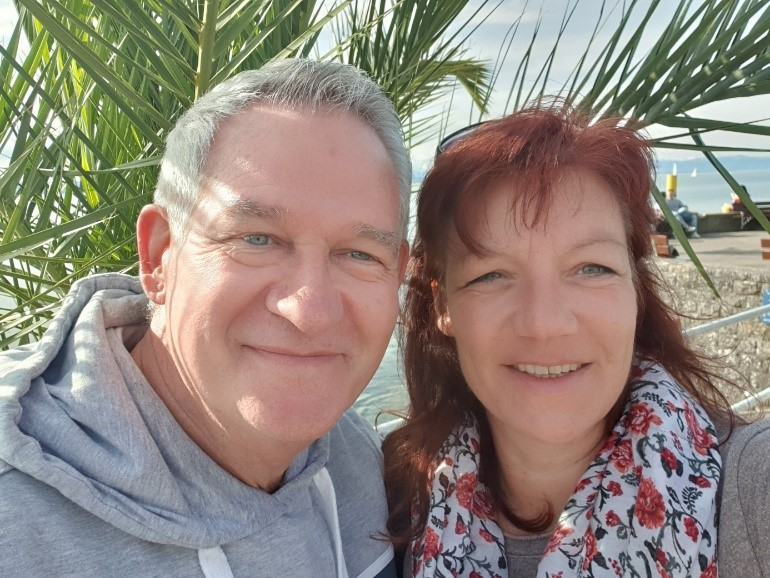

Krisen sind Wegweiser in Deinem Leben, die verstanden werden wollen und dir den Weg weisen.
Der Mensch ist ein Wunderwerk an Selbstheilungskräften.Unser Selbstbild ist oft durch äußere Einflüsse, Verletzungen oder Traumatas und den daraus resultierenden falschen Glaubenssätzen verzerrt, so dass Krankheiten entstehen.
Durch die Öffnung für die Vermittlung der allgegenwärtigen kosmischen Heilenergie kommst Du wieder mit deiner wahren Natur in Kontakt.
Nur wenn Körper, Seele und Geist in dieselbe Richtung laufen kann Dein Licht wieder strahlen.
Mein Name ist Alexandra und mein Anliegen ist es Deine blockierten Selbstheilungskräfte zu befreien, damit Du in Gesundheit, Frieden und Fülle leben kannst.
Geistige Heilarbeit kennt keine zeitlichen und räumlichen Grenzen
Heilgespräche mit Energieübertragung zur Aktivierung der Selbstheilungskräfte
Im Gespräch erhältst Du ein klares Bild von Dir und deinem Problem, deiner Herausforderung, deinem Konflikt oder Deiner Krankheit und der damit verbundenen Chance zum Wachstum. Um deinen Weg zu stärken und die Heilung einzuleiten empfängst du aus der geistigen Welt Heilenergie. Alter Ballast, der dich daran hindern will vorwärts zu gehen wird dabei aufgelöst, so dass dein Weg frei wird. Da über das Quantenfeld alles miteinander verbunden ist, funktioniert Energieübertragung auch auf die Ferne. Mittels meiner Medialität kann ich dir helfen bei: - Allen Krankheiten - Energetische Wirbelsäulenaufrichtung, alle Reflexzonen zu den Organen werden stimuliert - Ängsten und Zweifeln - Stress und Erschöpfung - Krankmachende Emotionen, Traumatas überwinden, Karma lösen, Vergangenes zu bereinigen - deinen lichtvollen Weg zu gehen, deinen Seelenplan wahrzunehmen und zu leben - Entscheidungen zu treffen, Konflikte zu lösen, sich etwas zu trauenHeilung passiert immer in der Stille und in der Anbindung an dein wahres Selbst.
Rückenschmerzen:
Jeder Wirbel Deiner Wirbelsäule steht in Bezug zu einem Organ und Seelenthema deiner Person. Bei Rückenschmerzen biete ich Dir eine energesstische Behandlung der Wirbelsäule an. Die Wirbelsäule kann oft innerhalb weniger Minuten am Telefon wieder ausgerichtet werden, so dass Du wieder aufrecht im Leben stehst.Sei authentisch und bewahre deine Aufrichtigkeit und Haltung
Zwischenmenschliche Beziehungen:
Du hast ein Problem im zwischenmenschlichen Bereich? Der Umgang mit anderen Menschen bildet eine Herausforderung für dich. Oft ist ein abgespeichertes Traumata die Ursache, warum uns manche Menschen oder Situationen scheinbar belasten. Wir beleuchten das gemeinsame Thema und lösen es auf.Durch Heilarbeit verändern wir uns von innen heraus. Die eigene Schwingung wird erhöht und du ziehst bessere Gegebenheiten in dein Leben.
Intensive Begleitung z.B. bei Krankheit:
Bei tieferen oder chronischen Themen biete ich zusammen mit meinem Lebensgefährten Lothar eine Begleitung über einen längeren Zeitraum an. Durch unsere jeweilige Ausrichtung der Heilarbeit können wir dir in der gemeinsamen Arbeit ein stärkeres Heilfeld anbieten. Dabei empfängst Du eine tägliche Fernbehandlung. Der Fortschritt der neuen Ausrichtung überprüfen wir in 2 Kontakten pro Woche, telefonisch oder über SkypeWir freuen uns, dich auf deinem Weg in dein neues Leben ein Stück weit begleiten zu dürfen!
Liebe ist die Antwort.

Kinder -
Mein Anliegen ist es, Dein Kind in seiner Gesundheit und Psyche zu stärken. Kinder können in diesen Zeiten vielen verschiedenen Belastungen ausgesetzt sein, die Ihre körperliche und seelische Gesundheit gefährden und die sie Symptome entwickeln lassen, die darauf hinweisen. - Folgen von Impfungen, wie Hautausschläge, Erkrankungen der Atemwege, Allergien, Entwickeln von ADHS oder autistische Züge - Ahnenthemen, die zu Angst, Wutausbrüchen oder seltsamen Verhaltensweisen führen - Eingeschlossene Emotionen (siehe dort) - Ständig wiederkehrende Infekte Mit dem Beginn der Konzentration auf die Lösung statt auf das Problem schaffen wir ein Heilfeld für Dein Kind, in dem es gesunden kann.Ein Kind kann nie genug Liebe bekommen.
Arbeiten nach dem EMOTIONSCODE nach Dr. Bradley Nelson
*wie wir die emotionalen Ursachen unserer Probleme und Krankheiten aufspüren und lösen können* Was sind eingeschlossene Emotionen? Gefühle, die einst durch eine Unterbrechung des natürlichen Gefühlverlaufs nicht zu Ende gefühlt und damit verdrängt wurden. Mit der Unterbrechung im Fühlen und Wahrnehmen haben diese sich dann als Emotionen im Energiefeld eingelagert. Diese eingeschlossenen Emotionen können nun wieder aufgespürt, erlöst und verarbeitet werden, um uns davon zu befreien. In welchen Situationen können sich eingeschlossene Emotionen bilden? bei Stress und durch das Verdrängen von Gefühlen Beziehungskrisen, Verlust eines geliebten Menschen: Trennung Scheidung Tod, Fehlgeburt finanzielle Schwierigkeiten, körperliches Trauma (z.B. Unfall) Misshandlung, körperlich, seelisch, verbal, sexuell vernachlässigt, verlassen, abgelehnt werden Auswirkungen von eingeschlossenen Emotionen: Körperliches und emotionales Ungleichgewicht, Erschöpfung, Überreaktionen körperliche Schmerzen, schwaches Immunsystem Funktionsstörungen der Organe, Rückenschmerzen, verschiedenste Krankheiten Zelldegenerationen bis zu malignen Krebsgeschehen über Jahrzehnte festgefahrene Reaktionsmuster im Verhalten Krankheiten, denen häufig auch eingeschlossene Emotionen zugrunde liegen Bei Kindern: ADHS, Schlafstörungen, Albträume, verschiedene Ängste, Allergien, Asthma, Lernschwächen, Bauchschmerzen Bei Erwachsenen: Kopfschmerzen, Migräne, Nackenschmerzen, Rückenschmerzen, Brustschmerzen, Gelenkschmerzen, Nasennebenhöhlenentzündungen, Schilddrüsenfunktionsstörungen, Sodbrennen, Schlafstörungen, Panikattacken, Phobien, Schwindel, Depressionen, chronische Müdigkeit, Diabetes, Krebs, Morbus Chron, Parkinson, MS, Impotenz, Unfruchtbarkeit, Obstipation, Fibromyalgie, Karpaltunnelsyndrom, Schmerzzustände verschiedenster Art,Vita Alexandra Matheis
Dipl. Ing. Chemie (FH), Pharmazeutische Chemie
Heilpraktikerin
Mutter von 2 erwachsenen Kindern
Ausbildung in Homöopathie, Pädagogik, Bioenergetisches Austesten, Emotionscode, Heilerin der Neuzeit, Burn-Out-Coach, Channeling Hellfühlen, Hellsehen, Hellhören
Mit meiner Gabe helfe ich seit 1999 Mensch und Tier auch über große Entfernungen. Ich arbeite nur in der Verbindung mit deinem Höheren Selbst in Achtung deines freien Willens.
Das göttliche Licht kann weder beeinflusst noch manipuliert werden und es steht Dir zu jeder Zeit frei, die vermittelte Energie anzunehmen oder nicht.
Heilpraktikerin
Mutter von 2 erwachsenen Kindern
Ausbildung in Homöopathie, Pädagogik, Bioenergetisches Austesten, Emotionscode, Heilerin der Neuzeit, Burn-Out-Coach, Channeling Hellfühlen, Hellsehen, Hellhören
Mit meiner Gabe helfe ich seit 1999 Mensch und Tier auch über große Entfernungen. Ich arbeite nur in der Verbindung mit deinem Höheren Selbst in Achtung deines freien Willens.
Das göttliche Licht kann weder beeinflusst noch manipuliert werden und es steht Dir zu jeder Zeit frei, die vermittelte Energie anzunehmen oder nicht.